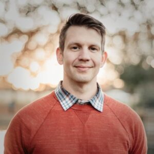

About David

David Rheams, PhD
Associate
David is a multifaceted leader, blending academic expertise with corporate strategy and innovation. As a Senior Business Architect at Atlassian and Adjunct Professor at UT Dallas, he melds research with product development, crafting business strategies that drive revenue, retention, and responsible innovation. His PhD in Cultural Studies from George Mason University explored the intersection of science, software, and communication. David's unique perspective fosters collaboration between academia and industry, guiding teams through creative problem-solving and ethical technology development.
With over 15 years of startup experience leading customer-centric teams at companies like LTK and ReachLocal, he excels at scaling operations while maintaining a people-first approach.
Back to Team